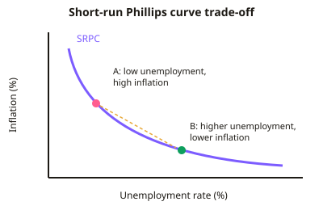

A-level Economics Year 12 · Topic 10
Macroeconomic policy
This topic evaluates how governments and central banks manage the economy.
We will cover policy objectives and trade offs, fiscal policy, automatic stabilisers, monetary policy and quantitative easing.
Then we compare market based and interventionist supply side policies, and judge how well the overall policy mix works in practice.
- 8 subtopics
- 365 questions
- Free: 10.1 notes and 10 questions
In this topic
- 10.1Policy objectives, conflicts and trade-offsFree below · 32 questions
- 10.2Fiscal policy: government spending, taxation, budget deficits and national debtOpen in Full Marks · 75 questions
- 10.3Fiscal policy: automatic stabilisers, effectiveness and limitationsOpen in Full Marks · 74 questions
- 10.4Monetary policy: interest rates, inflation targeting, the MPC and transmission mechanismOpen in Full Marks · 58 questions
- 10.5Quantitative easing and other unconventional monetary toolsOpen in Full Marks · 34 questions
- 10.6Supply-side policies: market-based approachesOpen in Full Marks · 29 questions
- 10.7Supply-side policies: interventionist approachesOpen in Full Marks · 35 questions
- 10.8Evaluating the policy mix: time lags, uncertainty, conflicts and external constraintsOpen in Full Marks · 28 questions
10.1 · Free notes
Policy objectives, conflicts and trade-offs

Key points
- Macroeconomic policy objectives in the UK are: economic growth, low unemployment, price stability, a balance of payments (current account) equilibrium, a sustainable government budget, income redistribution and environmental sustainability.
- Economic growth is the percentage change in real GDP: growth = (new real GDP − old real GDP) ÷ old real GDP × 100. Short-run growth is a rise in AD or actual output. Long-run growth is a rise in LRAS or productive capacity.
- Price stability means low, stable inflation. The UK target is 2% CPI, set by the Chancellor, and the Bank of England MPC operates it. Inflation = (new CPI − old CPI) ÷ old CPI × 100.
- Low unemployment is usually measured by the ILO unemployment rate = unemployed ÷ labour force × 100. The government aims to reduce cyclical and structural unemployment but cannot remove frictional unemployment, so it aims for the natural rate.
- The current account records trade in goods and services, primary income and secondary income. A deficit means outflows exceed inflows. Persistent deficits may need financing and may signal weak competitiveness, though they are not always harmful.
- Conflicts and trade-offs: growth versus current account (higher incomes raise imports); growth versus inflation (demand-pull when near full capacity); growth versus environment (negative externalities); growth versus equality.
- The short-run Phillips curve (SRPC) shows an inverse trade-off between unemployment and inflation. The long-run Phillips curve is vertical at the NRU (natural rate of unemployment). Stagflation (SRAS shifts left) shifts the SRPC outwards.
- Reducing the budget deficit by cutting spending or raising taxes lowers AD. This may conflict with growth and unemployment targets, so austerity has short-run costs even if the long-run aim is sustainability.
- Supply-side policies shift LRAS right. They can ease trade-offs by delivering growth, lower unemployment and low inflation together, but they are slow, costly and uncertain.
- For evaluation, governments weight objectives differently over time (inflation in the 1980s, deficit reduction after 2010, cost of living after 2021). The size of the output gap, the cause of inflation, the time horizon and the severity of conflicts all matter.
In more detail
- Phillips curve breaking down: in the 1960s, lower UK unemployment went with higher inflation, but in the 1970s both rose together (stagflation), so the trade-off was not stable.
- Worked conflict: a 1 percentage point cut in Bank Rate may boost growth and jobs, but risks pushing inflation above 2% and worsening the current account as imports rise.
- Changing priorities: in the 1980s governments put cutting inflation first, while after 2008 and in 2020 the focus switched to protecting jobs and output.
- Exam tip: name the two objectives in conflict, explain the mechanism linking them, and suggest a policy (often supply-side) that could ease the trade-off.
Practice
Policy objectives, conflicts and trade-offs: 10 questions
Pick an answer to check it, or open the answer for the explanation.
1. The UK government's inflation target, which the Bank of England must pursue, is:
- 2% measured by CPI
- 2% measured by RPI
- 3% measured by CPI
- 0% measured by CPI
Show answer
A: 2% measured by CPI. The target is 2% CPI inflation. The Chancellor sets it and the MPC operates it independently. Zero inflation is not the aim because of deflation risks.
2. A government boosts AD to raise growth. Which objective is most likely to be compromised?
- Low unemployment, as jobs fall
- Price stability, as prices fall
- Current account balance, as import spending rises
- Income redistribution, as taxes fall to zero
Show answer
C: Current account balance, as import spending rises. Higher incomes raise spending on imports, worsening the current account. Higher AD would normally cut unemployment and raise, not lower, inflation.
3. The short-run Phillips curve suggests that reducing unemployment will tend to:
- reduce inflation
- have no effect on inflation
- reduce the budget deficit only
- raise inflation
Show answer
D: raise inflation. The SRPC slopes downwards, showing an inverse trade-off between unemployment and inflation. Lower unemployment tends to be associated with higher inflation.
4. CPI was 120.0 last year and 126.0 this year. What is the inflation rate?
- 5.0%
- 4.8%
- 6.0%
- 0.05%
Show answer
A: 5.0%. Inflation = (126 − 120) ÷ 120 × 100 = 5.0%. Dividing by the new figure (126) gives 4.8%, a common error.
5. Real GDP rises from £2,000bn to £2,060bn. The rate of economic growth is:
- 60%
- 2.9%
- 3.0%
- 6.0%
Show answer
C: 3.0%. Growth = (2,060 − 2,000) ÷ 2,000 × 100 = 3.0%. Using the new GDP as the denominator gives 2.9%, which is wrong.
6. There are 1.5 million unemployed and a labour force of 33 million. The unemployment rate is about:
- 4.5%
- 5.0%
- 22%
- 1.5%
Show answer
A: 4.5%. Unemployment rate = unemployed ÷ labour force × 100 = 1.5 ÷ 33 × 100 ≈ 4.5%.
7. Which is the best example of a conflict between macroeconomic objectives?
- Lower unemployment alongside higher growth
- Lower inflation and a stronger currency
- Faster growth from fossil-fuel output harming environmental sustainability
- Higher growth raising tax revenue
Show answer
C: Faster growth from fossil-fuel output harming environmental sustainability. Higher output from fossil fuels creates negative externalities such as emissions, so growth conflicts with sustainability. The other options are complementary.
8. Why can supply-side policies reduce conflicts between macroeconomic objectives?
- They shift LRAS right, allowing growth without higher inflation
- They shift AD right only, raising inflation
- They reduce imports by law
- They remove the need for any government budget
Show answer
A: They shift LRAS right, allowing growth without higher inflation. Supply-side policies raise productive capacity and shift LRAS right. This lets output grow and unemployment fall without necessarily raising the price level.
9. Stagflation is best described as:
- high growth with falling unemployment
- falling inflation with rising employment
- falling prices with rising output
- stagnant output or rising unemployment together with high inflation
Show answer
D: stagnant output or rising unemployment together with high inflation. Stagflation combines weak growth or rising unemployment with high inflation, often from a cost-push shock that shifts SRAS left.
10. Strong economic growth is most likely to help the government budget objective because:
- national debt is automatically cancelled
- tax revenues rise and welfare spending falls
- government must raise benefit spending
- tax revenues fall as incomes rise
Show answer
B: tax revenues rise and welfare spending falls. Higher incomes and spending raise tax receipts, and lower unemployment cuts welfare payments. Together these reduce the deficit.
Keep going in Full Marks
Full Marks has 32 questions on Policy objectives, conflicts and trade-offs (22 more than here), set out in practice levels. You also get notes and 3D models for all 8 subtopics of Macroeconomic policy, plus games, timed exams and past papers.